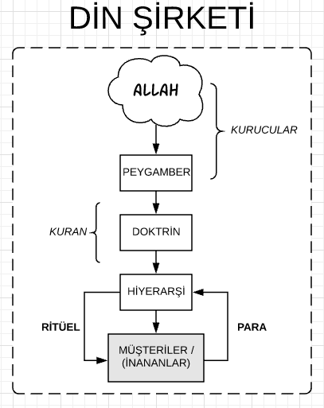

Ana Sayfa
Din anasayfa
0. Din - Özet
- Dinin; 1) devlet, 2) eğitim, 3) dil, 4) doktrin, 5) birey, 6) toplum, 7) para, 8) siyaset ve 9) ritüeller ile olan ilişkilerine baktığımızda, din denen şeyin toplumun içini kemiren bir parazit olduğunu görüyoruz. Din sadece ilahiyat değildir; din topluma entegre olmuş güçlü ve kadim bir sektördür.
- Din en az bu dokuz özellikten meydana gelmiş bir bütündür. Dinin sadece bir özelliğini alıp onun din olduğunu söylemek, bir arabanın bir tekerleğini alıp onun araba olduğunu söylemek kadar yanlıştır. Din, bir tüzel varlıktır —aynı bir şirket gibi— ve bir bütün olarak tanımlanıp incelenmelidir.
- Din; toplumun derinliklerine kadar sızmış ve sızdığı her yeri kirletip, bulandırıp, insanları birbirlerine düşman edip, eski gelenekleri unutturup, insanlara kendi batıl ritüellerini dayatmıştır.
- Din insanları bu dünyaya yabancılaştırmış; bu dünyada yaşamanın, bu dünya için yaşamanın, bir suç olduğunu ve acımasızca cezalandırılacağını söylemiştir. Din bu absürt görüşü dayatarak insanlara çok büyük bir kötülük yapmıştır.
- Dini özelleştirerek dinin zararlı etkilerinden kurtulmak istiyoruz. Din sadece bireysel alanda varolmalıdır. Devlet bireye bir din dayatmamalı ve birey istediği dinin ritüellerini uygulamakta serbest olmalıdır. Öyleyse, özelleştirme, din düşmanlığı değil, bireyin din seçme ve ibadet özgürlüğünü pekiştirecek olan bir süreçtir.
- Kamu alanında varolan bir din, toplumu kirletmeye, yozlaştırmaya ve geri bırakmaya devam edecektir. Çözüm, dinsizlik değil, dinin özelleştirilmesidir.
- Dinin topluma ve insanlara ne kadar zarar verdiğini görünce, dinin özelleştirilmesinin önemini anlamış oluyoruz.
- Dini bir marka olarak düşünürsek, bu markayı bin yıldır parlatan bir profesyonel rahipler sınıfı olduğunu görüyoruz. Din de her marka gibi pazarlanmaktadır. Pazarlama işini de dinin sahibi olan egemen güçler için çalışan bir ruhban sınıfı yapmaktadır. İslam'da bir ruhban sınıf olmamalıdır, ama gerçekte, eğitim kurumlarında örgütlenmiş bir ruhban sınıf vardır. 14 asırdır, ulema denen bu ruhban sınıf bir İslam propagandası yaratmış ve İslam'ı küresel bir din markası yapmışlardır.
- Dini özelleştirme sürece başladığında bizi dinsizlikle suçlayıp üzerimize gelecek olan bu ulema ordusunu küçümsemeyelim. Ulemanın kadim otoritesi vardır ve halk da onlara geleneksel olarak saygı duyar ve dini bunlardan öğrenir. Ulema ve onlara bağlı yobazlar, dini savunur gibi görünürler ama aslında kendi asalak hayat tarzlarını devam ettirmek için savaşmaktadırlar.
- Dinin asıl sahibi, egemen güçtür. Yani siyasi iktidardır. Dini parlatanlar ve propagandasını ve mitoslarını yaratanlar ise bu ruhban sınıftır. Ruhban sınıf egemen güç için çalışır.
Öyleyse, toplumu ve bireyi din sömürüsünden kurtarmanın tek yolu dini özelleştirmektir.
I. Din ve devlet ilişkisi
- Din devletin içine sızmış, devleti içerden kemiriyor. Yeteri kadar güçlendiğini hissettiği anda da iktidarı ele geçirmek için devlete karşı harekete geçiyor. 15 Temmuz'da olduğu gibi.
- Şu anda, devletin gövdesinin iki başı var: devlet ve din. Karar verici güç devlet gibi görünse de, din devleti yönlendirerek istediği kararları aldırtıyor.
- Devletin içinde iç içe geçmiş iki hiyerarşinin iktidar mücadelesini görüyoruz. Bir de, devletin dışında örgütlenmiş din görünümlü siyasi örgütlenmeler var. Bunlar da devletin içine sızmışlar.
- Devletin içinde bir parazit olan din hiyerarşisinin kendini yücelten ve varlığını devam ettirebilmesini sağlamak için uydurduğu bir ajandası vardır. Din bu ortaçağ ajandası ile devleti devamlı meşgul eder.
- Dinin özelleştirilmesindeki hedefimiz, din ve devlet hiyerarşilerini birbirlerinden ayırmak olduğundan, devlet ile dinin ilişkisini iyi anlamalıyız.
- Öyleyse, din özelleştirildiğinde, devlet iki başlılıktan kurtulacak ve bütün enerjisini devlet işleri ile uğraşmaya verebilecektir. Şu anda devletin enerjisinin büyük bir kısmı dincilerin yarattığı yapay gündemler ile uğraşmakla geçiyor.
II. Din ve eğitim ilişkisi
- Din eğitime de sızmıştır. Sızmaktan da öte, günümüzde eğitim, dincilerin kontrolündedir.
- Dinin yaşayan parçası bir hiyerarşidir ve her hiyerarşi gibi varlığını devam ettirebilmek için büyümek zorundadır. Bu sebepten eğitim dinin olmazsa olmazıdır.
- Din, eğitim adına devşirdiği Türk çocuklarını okullarında Araplaştırırak kendine bağlar.
- Bütün Türkiye'ye yayılmış Kuran kursları devşirilmiş Türk çocuklarını Araplaştırma merkezleri olarak suç işlemektedirler. Bu ihanet merkezleri kapatılacaktır.
- Dine göre eğitimin amacı bilgili, dürüst, akılcı, hayata uyumlu bireyler yetiştirmek değildir; onların amacı kendilerine körü körüne bağlı müritler yetiştirmektir.
- En değerli varlıklarımız olan gençlerimizin hayatını karartan ve onları hafızlara ve müritlere dönüştüren dinci eğitim sistemi tabii ki kaldırılacaktır.
- Din, küçücük Türk çocuklarını devşirip Kuran Kursu aldatmacası ile Araplaştırıyor. Devlet de bu devşirme olayına sessiz kalması bir yana, bu Araplaşmış Türklerden gelecek oylar için onlara destek bile veriyor.
- Din özelleştirildiğinde eğitim dinin elinden alınacaktır.
- Öyleyse, dinin özelleştirilmesinin en önemli sebeplerinden birisi eğitimi bu Arapçı hainlerin elinden kurtarmaktır.
III. Din ve dil ilişkisi
- Din dilimize de sızmış ve dilimizi de yozlaştırmıştır.
İnsanlar dil aracılığı ile düşünür. Dünyayı algılama biçimimizi ve dünya görüşümüzü belirleyen dildir. Bir dilde, "inşallah," "maşallah," "bismillah" gibi kelimeler varsa, o insanlar ister istemez batıla inanıyor demektir.
- Halkın yüzde 99'unun, hatta dine inanmayanların bile —farkında olmadan— batıla inanmalarının sebebi, 7. yüzyıl çöl Araplarının batıl inançlarının İslam yolu ile Türkçeye sızıp dilimizi yozlaştırmış olmasıdır.
- Öyleyse, din özelleştirilince, dilimiz de dinin zararlı etkilerinden kurtulacak, gelişecek ve güzelleşecektir.
IV. Din ve doktrin ilişkisi
- Her hiyerarşik oluşumun varoluş nedeni olan bir doktrini, veya bir kutsal kitabı vardır. Bu kâr amaçlı özel şirketler için de böyledir; spor klüpleri için de böyledir; fizik gibi okulcu akademik bilimler için de böyledir. İslam dininin hiyerarşisinin doktrin kitabı Kurandır. İnananları birbirlerine ve dine bağlayan yapıştırıcı Kuran'dır.
- Fakat elimizdeki Kuran peygamberin çevresine aktardığı Kuran değildir. Zaten peygamberin zamanında ayetler kitaplaşmamıştı. Peygamberden sonra gelen halifeler de, kendi yazdırdıkları "resmi" Kuran'a rakip olmasın diye varolan bütün yazılı ayetleri yok ettiler.
- Kutsal metinlerin genel bir karakteri vardır. Bir kutsal metni alıp klonlayabilirsiniz. Bu bağlamda klonlama demek, Kuran'ın yeni bir yorumunu tanımlayıp; uydurduğunuz bu yeni yorumun Allah ve peygamber tarafından tasdik edilmiş en doğru yorum olduğunu iddia etmek ve yeni örgütlenmenizin doktrin kitabı olarak sabitlemektir.
- İslamı klonlama işi ilk olarak mezhepler tarafından yapılmıştır. Günümüzde de, tarikatlar ve cemaatlar tarafından yapılmaktadır. Her tarikat ve cemaat İslam'ın bir klonudur.
- Öyleyse İslam'ın tek bir doktrini yoktur.
- Doktrin dinin sadece küçük hatta önemsiz bir parçasıdır. Din kendini doktrini ile göstermez; din kendini topluma entegre olmuş bir aktör olarak belli eder. Bu sebepten, dini bir şirket olarak görmek en iyisidir.
V. Din ve Birey ilişkisi
- Din bireyin aklına da sızmıştır ve hareketlerini, davranışlarını ve dünya görüşünü tanımlamıştır.
- Eski Türk töresi çoktan unutulmuş ve Türkler İslamla gelen Arap Bedevi kültürünü ve karakterini maalesef benimsemişlerdir.
- Bu sebepten Türkler arasında Arap özentisi olan bireyler neredeyse nüfusun yarısını oluştururlar.
- Tanzimat ve sonrasında nasıl Fransız özentisi bir Monşer tiplemesi türemiş ise, günümüzün Monşeri de Arap Monşerleridir.
- Fransız Monşeri Türkçeden nefret eder ve her iki kelimesinden birinin Fransızca olmasına dikkat ederdi; Arap Monşeri de Türkçe'yi Arap aksanı ile konuşur ve Arapça kelimeleri bolca kullanır. Böylece kutsal sandığı Arapça kelimeler ile konuşarak Arap olduğunu ve Allah'a yaklaştığını sanır.
- Arapla İslam birbirinden ayrılamayacağı için de bu Arapçıların hepsi İslamcı olurlar.
- Toplumu ve bireyin aklını bu din pisliğinden temizlemek en az 3 kuşak alacaktır. Onun için şimdiden başlamamız gerekiyor.
- Öyleyse, din özelleşince, Arap sömürgeciliğinin din propagandasına aldanıp kendi ülkesine düşman ve Araplara hayran olan insanların sayısı azalacaktır çünkü bunların yetişme yerleri olan okullar, tarikatlar ve cemaatler kapatılmış olacaktır.
VI. Din ve toplum ilişkisi
- Din ahtapotunun kolları toplumun her tarafını sarmıştır. Dinin girmediği yer yoktur.
- Dinin bulaştığı her yer kirlenmiş ve yozlaşmıştır.
- Din çok güçlü bir ayırıcıdır ve egemen güçler tarafından toplumu bölmek için kullanılır.
- Öyleyse, din özelleştirildiğinde, toplum da kanını emen bir parazitten kurtulmuş gibi rahatlayacaktır. Gerilim azalacak ve insanların yüzü gülecek ve insanlar hayatın tadını çıkartmayı yeniden öğreneceklerdir. Dinin karamsar ve ruh karartıcı kara bulutları toplumun üstünden kalkmış olacaktır.
VII. Din ve para ilişkisi
- Din ekonomiye de sızmıştır.
- Din kendi menfaati için ülke ekonomisini hortumlamaktadır.
Din; tarikatlar, cemaatlar ve okullar yoluyla, devlet içinde devlet olmuş ve ülke ekonomisini kendi sapık amaçları için hortumluyor ve ekonomiye hiç bir katkı yapmadan zenginleşiyor.
- Öyleyse, din özelleşince, tarikatlar ve cemaatlar kapatılacak ve toplum bu asalaklardan kurtulacaktır.
VIII. Din ve siyaset ilişkisi
- Din siyasete de sızmıştır. Siyasetçiler din ile aldatmaya bağımlıdırlar. Halkı din ile bölerek yönetmenin ustası olmuşlardır.
- Onun için hiç bir siyasetçi dinin özelleştirilmesini istemez.
- Dinci olmayan, laikliği savunan politikacılar bile, aslında din üzerinden oylarını arttırma hesabı içindedirler. Onlar da din karşıtı rolünü oynayarak dini kullanmış olurlar. Ama konu aynıdır: din.
- Öyleyse, din özelleştirilince hiç bir politikacı halkı din sömürüsü yaparak aldatamayacaktır.
IX. Din ve ritüel ilişkisi
- Din insanların birbirleri ile olan ilişkilerini de çürütmüştür. İnsanların eski güzel ritüelleri, beraber yaptıkları pagan danslar ve oyunların hepsi İslam'ın intikamcı tanrısının kulluk ritüelleri adına unutturulmuştur.
- İslam ritüelleri insanların kendilerini aşağılamaları üzerine kurgulanmıştır.
- İnsanlar kendilerini aşağılayan, intikamcı ve cezalandırıcı bir tanrının boynu eğik kulları olmaya zorlanmıştır. İslam'ın ritüelleri bireyi aşağılamak için tasarlanmıştır.
- Kulluk yapmak yüceltilmiştir. Bu da egemen güçlerin çok hoşuna gitmiştir. Çünkü Allah'a kul olan, dünyada da egemen güçlerin kulu olmakta bir sakınca görmez.
- Bu sebepten egemenler dini ve dinin ritüellerini çok severler. Dinî ritüelleri teşvik ederler. Ülkeyi camilerle donatırlar.
- Öyleyse, din özelleştirilince, kamu alanlarında hiç bir dinî tören ve ritüel yapılamayacağı için, din siyasi bir güç olmaktan çıkacaktır.
- Herkes evinde istediği ritüeli yapar.
- İbadet birey ile tanrısı arasındadır. İbadeti toplu halde yapmanın tek sebebi dini siyasi bir güç haline getirmektir.
X. Din ve egemen güçler ilişkisi
- Din egemen güçlerin kullandığı en eski sömürü aracıdır.
- Binlerce yıl önce, egemen güçler insanları kendilerine yabancılaştırarak onları rahatça yönetebileceklerini öğrendiler. İnsanları kendilerine ve doğal yaşamlarına yabancılaştırmanın en kolay yolunun da onlara bir din dayatmak olduğunu keşfettiler.
- Hâlâ da insanları din ile yabancılaştırmayı ve sömürmeyi sürdürüyorlar.
- Dinin günümüz toplumunda da bir sömürü aracı olarak kullanıldığına dair bir çok kitap yazılmıştır. (Bakınız, Allah ile Aldatmak)
- Günümüzde de egemen güçler dini halkı aldatmak için kullanıyorlar.
- Öyleyse, din özelleştiği zaman, egemen güçler dini bir sömürü aracı olarak kullanamayacaktır.
XI. Din ile Atatürk'ün başlattığı din devriminin ilişkisi
- Evet, din toplumun her yerine sızmıştır ve ülkenin enerjisini emmektedir ama durum ümitsiz değildir. Din parazitine karşı çaresiz değiliz.
- Atatürk'ün başlattığı din devrimini, dini özelleştirerek tamamlayabiliriz.
- Dini toplumsal ve kamusal alandan silip özel alana aktarabiliriz. Böylece toplumu tarikatların ve cemaatların egemenliğinden kurtarmış oluruz.
- Bu özelleştirme süreci en az üç kuşak sürecektir, yani hedefe ulaşmak 150 yıl alabilir.
- İlk adımı Atatürk atmıştır. Atatürk dinî örgütlenmelerin aslında din kisvesi altında iktidar peşinde olan siyasi örgütlenmeler olduklarını anlamıştır. Bu sebepten onları kapatmıştır.
- Atatürk, bu din örgütlenmelerinin eğitimden beslendiklerini ve yeni müritlerini okullarda yetiştirdiklerini gördüğü için de, dinî eğitim veren okulları da kapatmıştır. Bu iki hareketinden dolayı din tacirleri hala Atatürk'e düşmandırlar.
- Atatürk öldükten sonra din hortlamış ve bugün her zamankinden daha güçlü bir hale gelmiştir. Devlete karşı kalkışacak kadar güçlendiğini bile zannetmiştir.
- Bize düşen görev, Atatürk'ün bıraktığı yerden devam edip dini özelleştirmektir. Atatürk'ün başlattığı din devrimini başarı ile sonuçlandıracağız.
- Öyleyse, dinin özelleştirilmesi, Atatürk'ün bitirmeye ömrü yetmediği din devriminin tamamlanmasıdır. Bu Atatürk'ün bize bıraktığı kutsal bir görevdir.
XII. Din ve şirket ilişkisi


- Dini bir çok parçalardan meydana gelmiş tüzel bir varlık olarak düşünebiliriz; aynı bir şirket gibi.
- Yukardaki grafikte, şirketin kurucuları, doğal olarak, Allah ve elçisi olarak gösterilmiş.
- Her hiyerarşik oluşumun, hiyerarşiyi meydana getiren insanları birbirine bağlayan bir ortak kutsal metni vardır. Hiyerarşinin parçası olmak isteyen herkes, bu kutsal metni kayıtsız şartsız kabul ettikten sonra, ortaklığa kabul edilirler.
- Kâr amaçlı bir şirketin bağlayıcı kutsal doktrini "kâr" kavramıdır. İslam'ın doktrini Kuran'dır.
- Her şirketin bir varoluş sebebi veya misyonu vardır. Genel olarak, bir hiyerarşinin en önemli misyonu varlığını devam ettirmektir; bunun için de büyümelidir. Büyüme de müşterileri arttırarak olur.
- Dinin müşterileri dine inananlar veya müritlerdir. Müritler eğitim ve okul yolu ile devşirilir. Eğitim demek, doktrini yeni kuşaklara öğretmek ve şartlar ne olursa olsun doktrini savunmanın esas olduğunu talebelere aşılamaktır.
- Bunlar profesyonel din rahipleri olurlar ve devlet için veya tarikatlar ve cemaatlar için çalışırlar. Bir de profesyonel olmayıp, alaylı olan, yani dine samimi olarak inanan insanlar vardır. Bunlar profesyonellerin propagandalarına kanıp, dinin ritüellerini yaparak Allah'a yaklaştıklarını ve "öbür dünyada" ödüllendirileceklerine zanneden insanlar olurlar. Ama profesyonellerin böyle bir inancı yoktur. Onlar samimi inananları öbür dünya ile aldatarak kendileri bu dünyada zengin olurlar.
- Grafikte bu din hiyerarşisinin ritüel yolu ile samimi inananları nasıl kandırdıklarını gösterdik.
- Hiyerarşi kendini yücelten ve ritüeli uygulayanları aşağılayan ritüeller tasarlamıştır. Bu ritüelleri uygulayan insanlar hiyerarşinin istediği kullara dönüşür.
- İnanan, arada bir bağış yapsa bile, profesyonellerin ona bedavadan hizmet ettiğini ve dini bağışladığını zanneder. Halbuki hiyerarşi onu ritüeller yolu ile kendine bağlamakta ve aldatmaktadır. Zaten, ritüeli küçük yaştan beri uygulayan bir insanda ritüel kutsal bir alışkanlık haline gelir.
- Din zaten egemen güçlerin kontrolündedir. Boynu eğik olarak Allah'a kulluk etme ritüelleri aslında dinin sahibi olana egemen güçlere kulluk etmektir. Samimi inanan Allah'a kulluk ediyorum zannederken egemen güçlerin kulu olmuştur.
- Beni şaşırtan, "çöl Arabı" diye küçümsediğimiz bu Arap halifelerinin bu soyut ilişkiyi nasıl bu kadar iyi anladıklarıdır. Yani, dinin ismini "teslim olma dini" yapıyorlar. İnsanlara El İlah adlı bir tanrıya teslim olun diyorlar. Ve teslim olanlar aslında Halifelerin İslam devletine teslim etmiş oluyorlar.
XIII. Din ve özelleştirme ilişkisi
- Topluma hiçbir katkısı olmayan; ülkenin ekonomisine hiç bir katkı yapmayan; fakat kendi varlığını sürdürebilmek için ülkenin kaynaklarını din adına hortumlayan; toplumu bölen; bu din hiyerarşisinden kurtulmanın tek yolu dini özelleştirmektir.
- Din bireyseldir ve bireysel kalmalıdır.
- Dinin kamu alanında varolmasının tek sebebi egemen güçlerin dini kullanarak halkı aldatma sevdasıdır.
- Din tacirlerinin propagandalarına inanmayan ve kendi şahsi alanında ibadetini yapan bir insan politikacılar tarafından kullanılamaz.
- Toplumun kanını emen siyasi din örgütlenmeleri yaptıkları sahtekarlıkları din adına yapıyormuş gibi göstererek kendilerini meşrulaştırırlar. Devlet de bu siyasi örgütlenmelerden aldığı oylar için onları destekler. Yani devlet siyasi din örgütlenmelerini destekleyerek kendi kuyusunu kazmış olur.
- Öyleyse, topluma ve bireye bu kadar zarar veren, bulunduğu her ortamı zehirleyen, dinden ülkeyi kurtarmanın tek yolu dini özelleştirmektir.
XIV. Din ve yabancılaşma ilişkisi
- Din bireyi kendine yabancılaştırır.